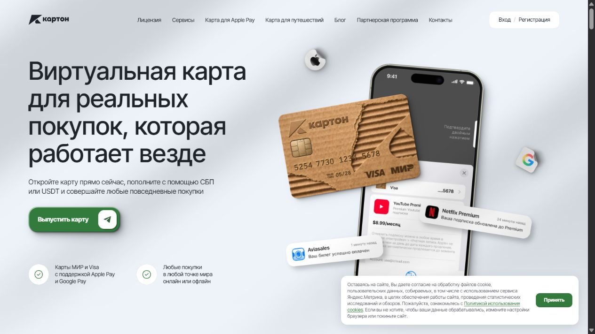

01 / Рынок
Исследование конкурентов, аудитории и сценариев использования.
Коммерческий опыт · с июля 2026
Позиционирование, контент, реклама и путь пользователя от первого контакта до продукта. Работаю над привлечением и удержанием вместе с командой.

Настоящий скриншот kartonpay.com. Дизайн и разработка сайта принадлежат команде проекта; мой кейс — о маркетинге и оптимизации.
С июля 2026 года работаю в Karton Pay на пересечении маркетинга, контента, аналитики и продукта. Отвечаю за рекламу, коммуникации, воронку, SEO и оптимизацию сайта.
Сделать путь к сервису понятным: кому он нужен, какую задачу решает, что пользователь делает после перехода и почему возвращается. Связать коммуникацию, посадочные страницы и Telegram-бота.
пользователей бота за месяц
Публичная карточка Telegram
подписчиков Telegram-канала
Открытая карточка Telemetr
просмотров на публикацию
Показатель Telemetr
Публичные снимки проверены 2 октября 2026 года; счётчики и данные агрегатора могут обновляться с задержкой. Это показатели сервиса и командной работы. Мой вклад — маркетинг и оптимизация. Без сопоставимых данных за июль нельзя достоверно рассчитать рост или выделить долю отдельного канала.
Исследование конкурентов, аудитории и сценариев использования.
Позиционирование, контентная стратегия и сценарии коммуникаций.
План рекламных тестов, гипотезы и критерии оценки.
План удержания, повторного использования и партнёрских каналов.
Описание опирается на подготовленные рабочие материалы июля–августа 2026 года. Стратегии и прогнозы не выдаются за уже достигнутые финансовые результаты; внутренние документы и рекламные кабинеты здесь не публикуются.